| ID | 問題 | 答え | 解説 |
|---|---|---|---|
| Lv02_Ca013_0001 | 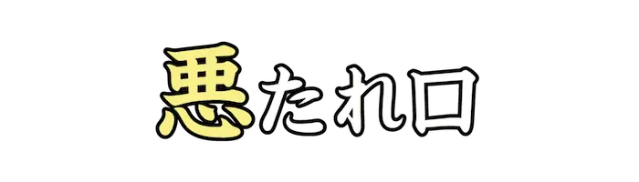 |
あく | 嫌われるような言葉を言うこと。憎まれ口。 |
| Lv02_Ca013_0002 | あくどう | いたずらがひどく、手に負えない子ども。 | |
| Lv02_Ca013_0003 | が | 自身の意見を曲げず、強情である。 | |
| Lv02_Ca013_0004 | 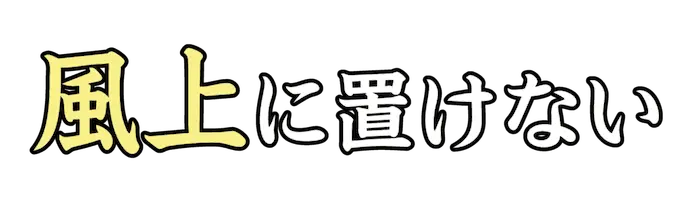 |
かざかみ | 卑劣な言動をする人をののしる言葉。 |
| Lv02_Ca013_0005 | ぎんなが | 外見が良いだけの、見かけ倒しのもの。また、お金を少しも出さない人。 | |
| Lv02_Ca013_0006 | 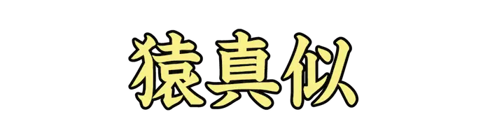 |
さるまね | 特に考えもせずに、むやみに他人の真似をすること。 |
| Lv02_Ca013_0007 | 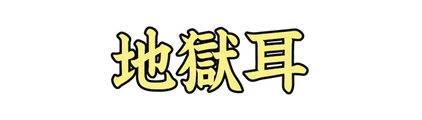 |
じごくみみ | 人の<噂|うわさ>をいちはやく聞き込んでいること。一度聞いたことをずっと覚えていること。 |
| Lv02_Ca013_0008 | じだらく | 態度にしまりがなく、だらしのないこと。 | |
| Lv02_Ca013_0009 | 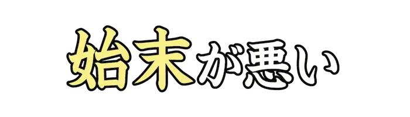 |
しまつ | 手間が掛かって面倒である。また、処理のしようがない。 |
| Lv02_Ca013_0010 | 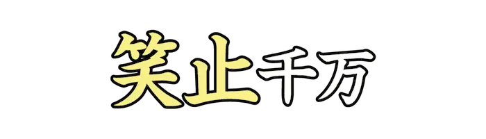 |
しょうし | 非常にばかばかしくて、話にならないこと。 |
| Lv02_Ca013_0011 | ずぶと | 少しのことではびくともしない。また、とてもずうずうしい。 | |
| Lv02_Ca013_0012 | 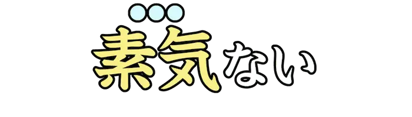 |
そっけ | 他人に対する恩情が感じられない。また、無関心である。 |
| Lv02_Ca013_0013 | 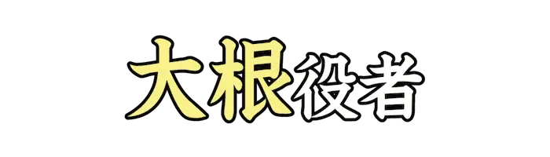 |
だいこん | 演技が未熟な役者などを批判していう語。 |
| Lv02_Ca013_0014 | 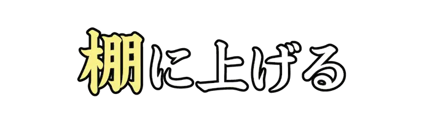 |
たな | 自分に都合の悪いことには一切触れずに、他人の欠点は非難する。 |
| Lv02_Ca013_0015 | 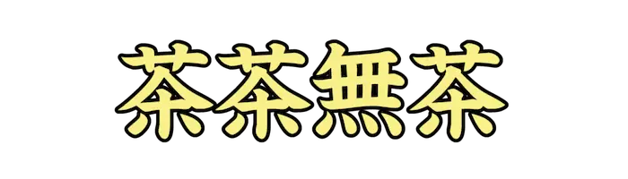 |
ちゃちゃむちゃ | 分別のないさまや、台無しにするさま。『<茶茶無茶苦茶|ちゃちゃむちゃくちゃ>』の略。 |
| Lv02_Ca013_0016 | つらよご | 世間に対する面目や名誉をけがすこと。 | |
| Lv02_Ca013_0017 | 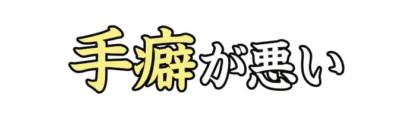 |
てくせ | 盗みをしてしまう癖がある。 |
| Lv02_Ca013_0018 | 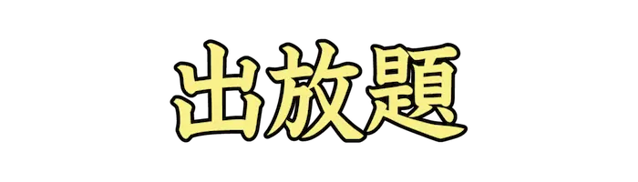 |
でほうだい | 出まかせで、勝手なことやでたらめを言うこと。 |
| Lv02_Ca013_0019 | とうしろう | 『しろうと』を、人の名のように逆から呼んだ隠語。 | |
| Lv02_Ca013_0020 | 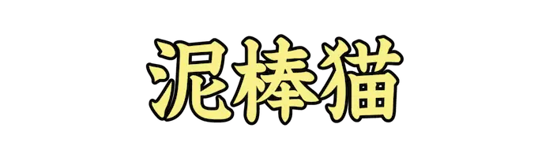 |
どろぼうねこ | 人の家に入り、食べ物を盗む猫。転じて、隠れて悪事をはたらく人。 |
| Lv02_Ca013_0021 | ねりま | 練馬は大根の産地であるということから、『大根役者』を指す隠語。 | |
| Lv02_Ca013_0022 | 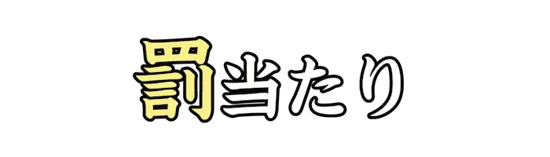 |
ばち | 悪事をした<報|むく>いがくるような行為。また、そのようなことをする人。 |
| Lv02_Ca013_0023 | 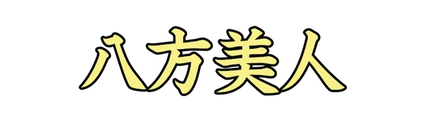 |
はっぽうびじん | 誰からも好かれるために、愛想よく接するようにしている人。 |
| Lv02_Ca013_0024 | 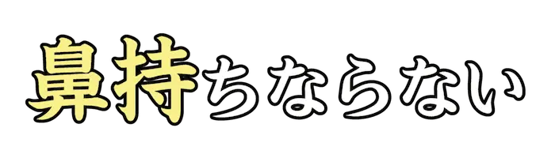 |
はなも | 言語や行動が不愉快でがまんならない。 |
| Lv02_Ca013_0025 | 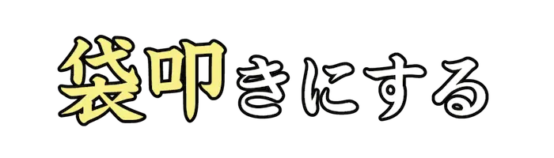 |
ふくろだた | 一人を集団で囲んで叩きのめす。また、ＳＮＳ上で炎上した人を集団で誹謗する。 |
| Lv02_Ca013_0026 | 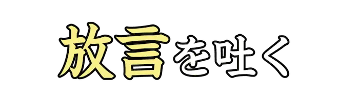 |
ほうげん | 他人が言われてどう思うかを考慮せずに、考えていることを口に出す。 |
| Lv02_Ca013_0027 | 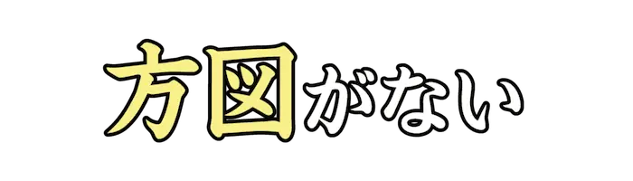 |
ほうず | 際限や、きりがない。また、とんでもない。 |
| Lv02_Ca013_0028 | 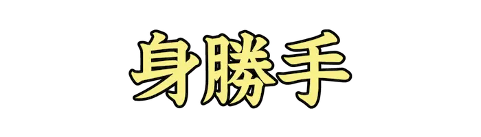 |
みがって | 自分の都合だけを考えて行動するさま。 |
| Lv02_Ca013_0029 | 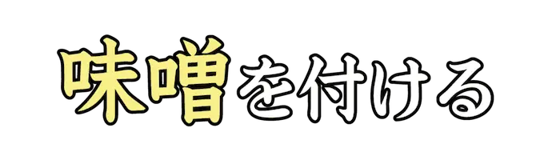 |
みそ | 失敗して面目を失ったり、醜態をさらす。 |
| Lv02_Ca013_0030 | ものぐさ | 物事をするのがおっくうで、面倒がること。また、そのような人。 | |
| Lv02_Ca013_0031 | やっかいもの | 他人に迷惑をかけたり、世話をかける人。 | |
| Lv02_Ca013_0032 | わかぞう | 若者や未熟者を、<軽蔑|けいべつ>して言う語。 | |
| Lv02_Ca013_0033 | 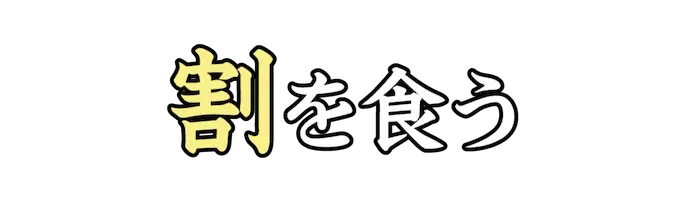 |
わり | 損をする。自身が不利となる。 |
| Lv02_Ca013_0034 | 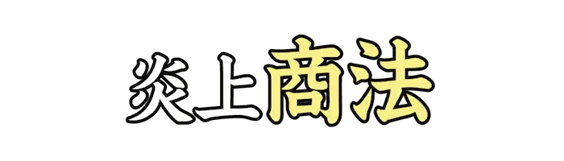 |
しょうほう | 世間が批判するような内容を用いて、宣伝や知名度上昇をはかるマーケティング手法。 |
| Lv02_Ca013_0035 | しんき | 思うようにならず、じれったい。 | |
| Lv02_Ca013_0036 | 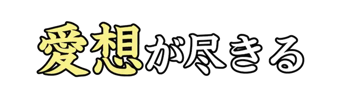 |
あいそ | ある人に対し、信頼や好意が持てなくなる。 |
| Lv02_Ca013_0037 | 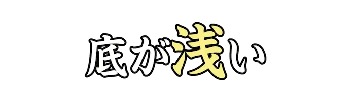 |
あさ | 人の器量や、物事の内容に深みがない。 |
| Lv02_Ca013_0038 | 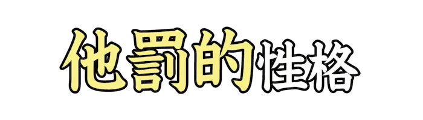 |
たばつてき | 失敗や不満の原因を外部にあるものとし、他人や環境を攻撃する傾向のある性格。 |
| Lv02_Ca013_0039 | 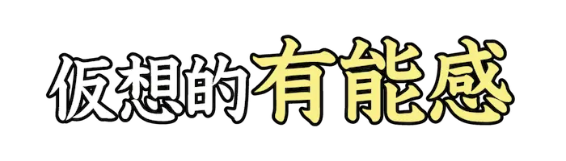 |
ゆうのうかん | 自己肯定感の中で、他者軽視によって生じるまがい物の自尊心を指す用語。 |
| Lv02_Ca013_0040 | 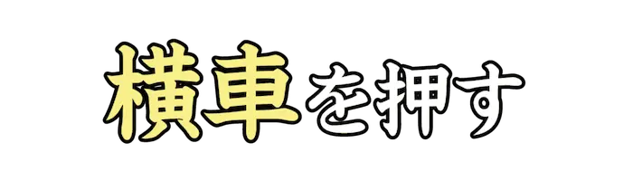 |
よこぐるま | 道理に合わないようなことを、無理やりに押し通すたとえ。 |
| Lv02_Ca013_0041 | 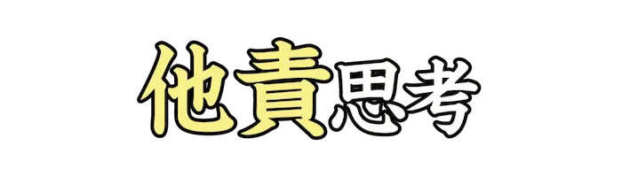 |
たせき | 何か不都合が起きたときに、その原因を他者に求めて非難するような考え方。 |
| Lv02_Ca013_0042 | 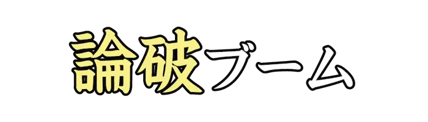 |
ろんぱ | 子どもやＳＮＳの間などで見られる、自分の正しさを主張する流行りごと。 |
| Lv02_Ca013_0043 | こうあつてき | 権力などによって、他人を威圧するようにふるまうさま。 | |
| Lv02_Ca013_0044 | 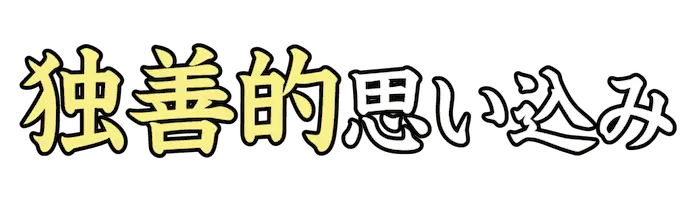 |
どくぜんてき | ネット上の人物は、現実の人とは別物だと思い込んでしまうことを指す用語。 |
| Lv02_Ca013_0045 | 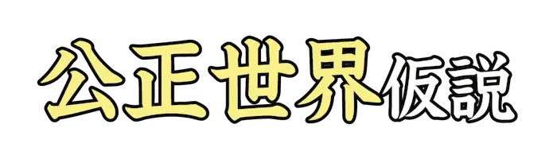 |
こうせいせかい | 人の言動に対し、正義は必ず報われ、罪は必ず罰せられるという考え方。 |
| Lv02_Ca013_0046 | 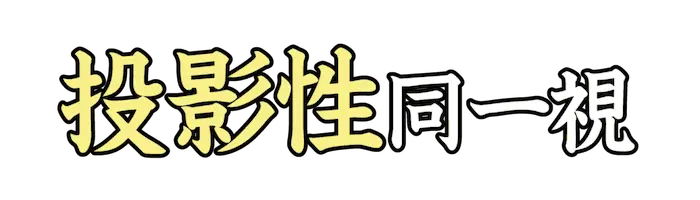 |
とうえいせい | 自身の欠点を、相手が考えてるに違いないと思い込み安心しようとすることを指す用語。 |
| Lv02_Ca013_0047 | ぼうえい | 不安な場面や状況から、無意識にそれを和らげようとするしくみを指す用語。 | |
| Lv02_Ca013_0048 | 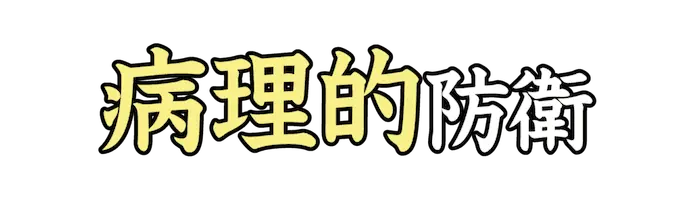 |
びょうりてき | 否認、分裂、退行など、精神を無意識に和らげる手段のうち最も現実を<歪|ゆが>めるもの。 |
| Lv02_Ca013_0049 | ごうりか | 防衛機制のひとつ。欲求の不足に対し、理由を付けて自分を納得させること。 | |
| Lv02_Ca013_0050 | 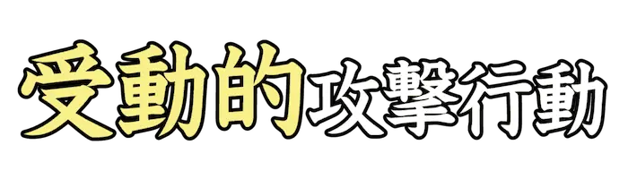 |
じゅどうてき | 沈黙、誠意のない謝罪など、すべき行動をあえてしない意思疎通の回避的な行動。 |
| Lv02_Ca013_0051 | 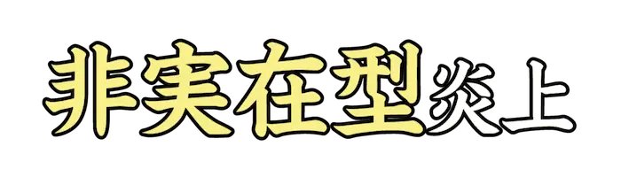 |
ひじつざいがた | メディアや個人などの発信によって、炎上してない話題を炎上と誤認させる行為。 |
| Lv02_Ca013_0052 | 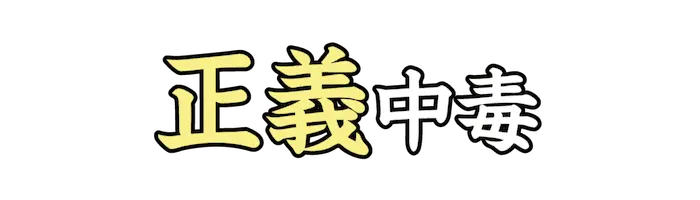 |
せいぎ | 正しいとされることを他人に押し付け、攻撃行為に快楽を覚える心理を指す用語。 |
| Lv02_Ca013_0053 | か | 俗に、ＳＮＳ上などで特定の要素に反応し、相手に文句を言ったり書き込むこと。 | |
| Lv02_Ca013_0054 | 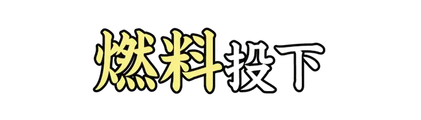 |
ねんりょう | 俗に、炎上中の人物が道義に反するなどの行為をして、更に批判を加速させること。 |
| Lv02_Ca013_0055 | 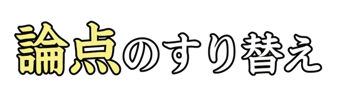 |
ろんてん | 俗に、話の本題から意図的に注意をそらす論法。『<議論相違|ぎろんそうい>の<虚偽|きょぎ>』とも。 |
| Lv02_Ca013_0056 | 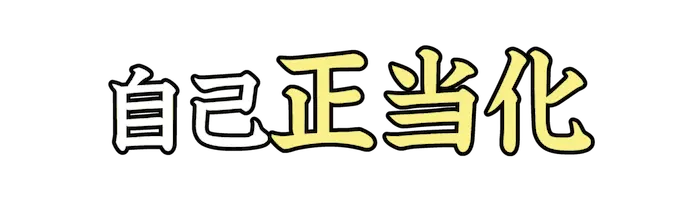 |
せいとうか | 自分の言動や考えを正しいものとするため、批判的な意見を否定する傾向を指す用語。 |
| Lv02_Ca013_0057 | 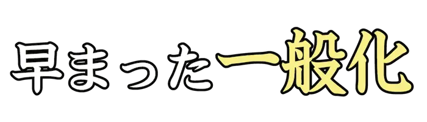 |
いっぱんか | 『ウシもウマも動物なので、動物はみな草食』など、少数の例から結論付ける誤り。 |
| Lv02_Ca013_0058 | 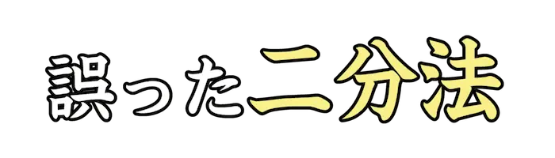 |
にぶんほう | 他にも選択肢はあるが『はいかいいえで答えてください』などで、二択を迫る論法。 |
| Lv02_Ca013_0059 | 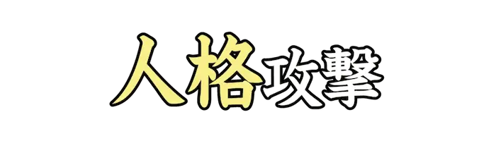 |
じんかく | 主張されている内容ではなく、相手の人格をとがめ立てして攻撃する論法。 |
| Lv02_Ca013_0060 | 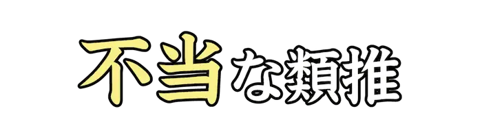 |
ふとう | 『魚は<鱗|うろこ>があるので、ヘビも魚である』など、関係の薄いもの同士を安易に比較する誤り。 |
| Lv02_Ca013_0061 | 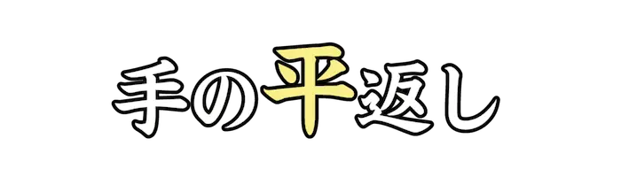 |
ひら | 支持あるいは反対していたものに対して、何かのきっかけで逆の考えになること。 |
| Lv02_Ca013_0062 | 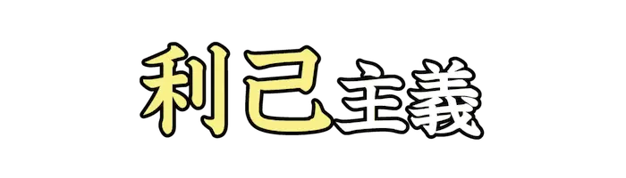 |
りこ | 自身の利益や損得ばかり考えて、他者の行為を軽視する考え方。エゴイズム。 |
| Lv02_Ca013_0063 | 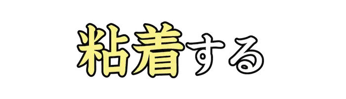 |
ねんちゃく | 俗に、ＳＮＳなどにおいて、特定の相手に執着し、しつこく絡み続けること。 |
| Lv02_Ca013_0064 | 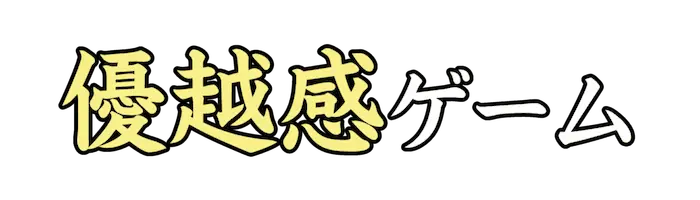 |
ゆうえつかん | ２０００年代に使われた、他者より自分が上であると確認する言動を皮肉った言葉。 |
| Lv02_Ca013_0065 | 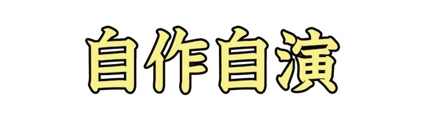 |
じさくじえん | 俗に、ネットなどで単独で複数の書き込みやアカウントを作り複数人に見せかける行為。 |
| Lv02_Ca013_0066 | じち | コミュニティにおいて、独自のルールなどを押しつけて迷惑行為をする者のこと。 | |
| Lv02_Ca013_0067 | 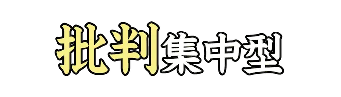 |
ひはん | 反社会的行為の自慢、身分をいつわるなど、炎上のうち、一方的に批判が集まる分類。 |
| Lv02_Ca013_0068 | じょうい | 承認欲求のうち、自身がほかの人よりも優位でありたいことを望む欲求。 | |
| Lv02_Ca013_0069 | しこう | 認知の<歪|ゆが>みにおいて、良いことも悪いことも悲観的にとらえてしまう考え方。 | |
| Lv02_Ca013_0070 | ば | 認知の<歪|ゆが>みにおいて、偶然の行動に対し、人格全体を否定して決めつける考え方。 | |
| Lv02_Ca013_0071 | いやし | ＳＮＳなどで広まった、相手が『嫌だ』と伝えても、その行為をやめない人を指す語。 | |
| Lv02_Ca013_0072 | こう | 俗に、言動が痛々しかったり、<支離滅裂|しりめつれつ>なことをする人のさまを表す語。 | |
| Lv02_Ca013_0073 | がっせん | お互いに学歴や経験など優越を競い合って、見せつけようとする争い。 | |
| Lv02_Ca013_0074 | けいさつ | 創作物などにおいて、当人の都合を考えず細かい指摘をする人をたとえた表現。 | |
| Lv02_Ca013_0075 | きしつ | 暴言や度の過ぎた個人の<詮索|せんさく>など、相手を支配したり攻撃したりする性格の傾向。 | |
| Lv02_Ca013_0076 | あ | 俗に、注目されたいために、ネットなどで不快に思われる行為をする人のこと。 | |
| Lv02_Ca013_0077 | つ | 俗に、ネットや動画サイトで、注目や反応を得るため、わざと誤解を招く投稿をする行為。 | |
| Lv02_Ca013_0078 | ひょうめい | 俗に、ネガティブな感情や意見を、主観的に強く発信する行為。 | |
| Lv02_Ca013_0079 | いんよう | ＳＮＳにおいて、他者の発言を引用し、その一部を取り上げて非難する行為。 | |
| Lv02_Ca013_0080 | じょうほう | 必要な情報を適切に見つけ、正しく理解し、活用、発信するための能力。 |